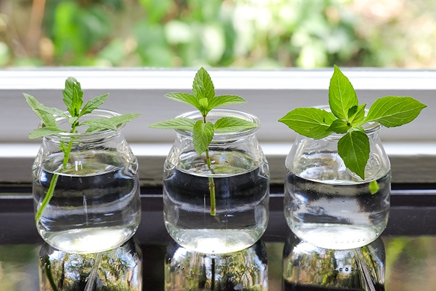

To grow well indoors, herbs need as much natural light as possible. Place them in a sunny spot near a window that faces south and receives at least 6 hours of sun daily.
The best way to ruin a tabletop or windowsill is to let a potted plant drain on it. Likewise, the best way to ruin most herbs is to let them sit in water so the roots will rot. Be sure to use a saucer, liner, or drain pan under the pot to catch water and protect your surface. A clay saucer lets moisture pass through, so opt for plastic, rubber, or metal instead.
Many cooks grow herbs indoors during the winter when it’s too cold outside or too wet to dig in the dirt, but you can grow herbs inside any time of year. Indoor herbs prefer the same temperatures that most people do—around 65 to 70 degrees F—so if you’re comfortable, they probably are. At night, temperatures near a window may drop to 55 or 60, but most herbs like that, too. Keep foliage from touching glass to protect from getting nipped by cold.
One easy way to grow herbs indoors is to grow them in a water-based (aka hydroponic) system. Your plants grow directly in water or a soilless medium, so moisture and nutrients are delivered directly to plant roots, and a grow light provides all of the “sunlight” needed by the plants.
